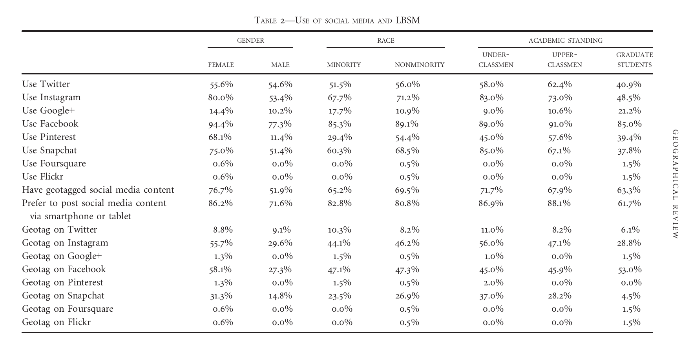
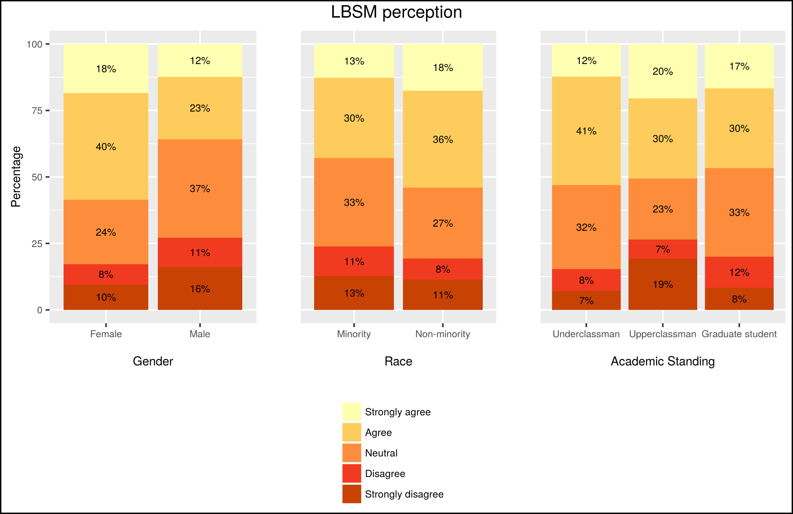
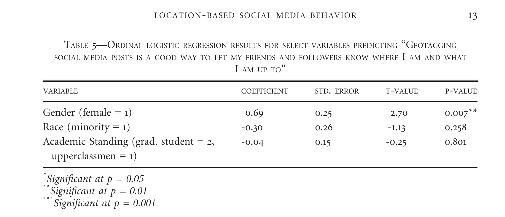
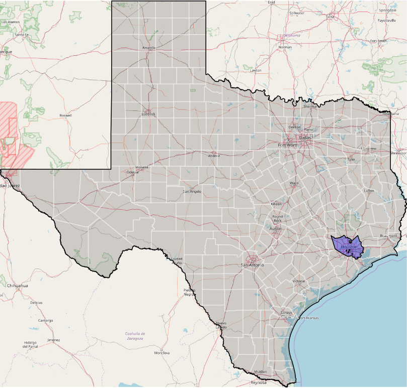
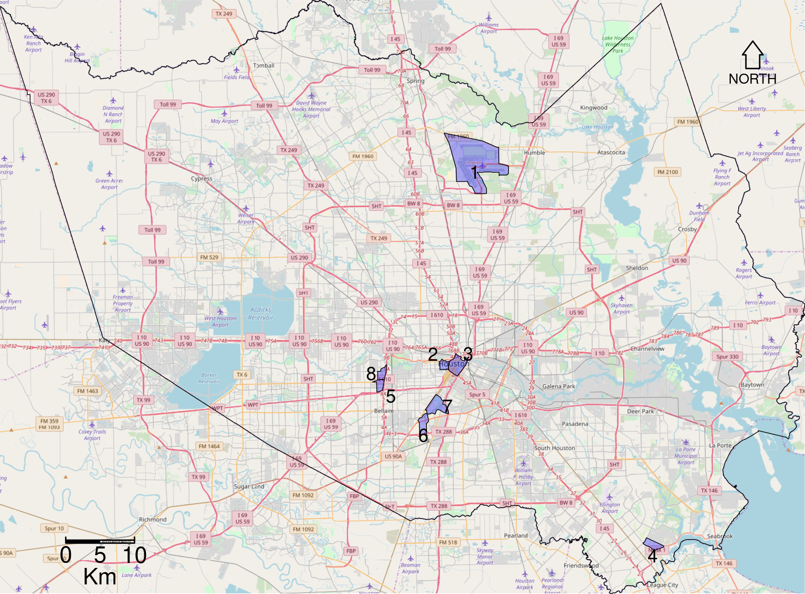

Dissertation Defense
Matthew Haffner
Department of Geography
Oklahoma State University
Overview
- Introduction
- Article 1: Location-based social media behaviors and perceptions: Views of University Students
- Article 2: A spatial analysis of non-English Twitter activity in Houston, Texas
- Article 3: A placed-based analysis of #BlackLivesMatter and color-blind racism on Twitter
- Conclusion
Introduction
- Big data
- Geographic information science
- Volunteered geographic information (VGI) (Goodchild 2007)
- Location-based social media (LBSM)
- Data quality
- Accuracy
- Validity
Introduction
- Approach: "Abductive reasoning" (Miller and Goodchild 2015)
Dissertation Structure
Location-based social media behavior and perceptions: Views of university students
Article 1
- Focus: demographics, usage patterns, and perceptions
- Questions
- Are there differences in terms of gender, race, and academic standing?
- How do people engage with place?
- What are the implications?
Findings
- Females and underclassmen are the most likely contributors
- Few racial differences exist
- Twitter is reasonably representative
- Users geotag at significant locations away from home
Data
- Survey administered to 5000 random Oklahoma State students
- 46 questions with 7 sections
- Demographics
- Mobile phone and tablet use
- Social media use
- Geotagging on social media
- Instagram use
- Twitter use
- LBSM perceptions
- n = 253
Demographics of survey respondents

Methods
- Differences in use:
- Chi-square tests
- Perception:
- Likert-scale items: Ordinal logistic regression (OLR)
- Open-ended items: Qualitative summaries
Use of Social Media and LBSM

Use of Social Media and LBSM 
Chi-squared tests for use of social media and LBSM

Chi-squared tests for use of social media and LBSM

"Geotagging social media posts is a good way to let my friends and my followers know where I am and what I am up to."


"I feel that geotagging infringes on my privacy."


"Locational journaling"
Why do you choose to geotag social media posts?
- "So that I can look back and remember where I was and what I was doing at certain times."
- "To remember where I was at the time of the post."
- "So I can remember where and what I did in my life."
A Spatial Analysis of Non-English Twitter Activity in Houston, Texas
Article 2
- Twitter location type: precise (lat/lon)
- Twitter subpopulation: users with an account language other than English
- Unit of analysis: census tracts
- Questions:
- Can conventional variables explain the production of Twitter activity by non-English users?
- How does LBSM inform us about place and users' behaviors?
Non-stationarity

GWR Results

User/tweet language
{
"_source": {
"created_at": "Sat Sep 03 11:57:06 +0000 2016",
"id": 772040720207245300,
"id_str": "772040720207245312",
"text": "So happy to spend my senior year by your side 💓 @ Green Lake, Wisconsin https://t.co/BLWIObnrxD",
"source": """Instagram""",
"truncated": false,
"in_reply_to_status_id": null,
"in_reply_to_status_id_str": null,
"in_reply_to_user_id": null,
"in_reply_to_user_id_str": null,
"in_reply_to_screen_name": null,
"user": {
"id": 604494646,
"id_str": "604494646",
"name": "",
"screen_name": "",
"location": "WI, USA",
"url": "http://Instagram.com/alisilvr",
"description": "livin' life, like I lived twice",
"protected": false,
"verified": false,
"followers_count": 786,
"friends_count": 638,
"listed_count": 4,
"favourites_count": 4758,
"statuses_count": 9052,
"created_at": "Sun Jun 10 12:47:47 +0000 2012",
"utc_offset": 7200,
"time_zone": "Madrid",
"geo_enabled": true,
"lang": "es",
"contributors_enabled": false,
"is_translator": false,
"profile_background_color": "D46922",
"profile_background_image_url": "http://pbs.twimg.com/profile_background_images/452374752535912449/y-vyLpme.jpeg",
"profile_background_image_url_https": "https://pbs.twimg.com/profile_background_images/452374752535912449/y-vyLpme.jpeg",
"profile_background_tile": false,
"profile_link_color": "9266CC",
"profile_sidebar_border_color": "FFFFFF",
"profile_sidebar_fill_color": "F6FFD1",
"profile_text_color": "333333",
"profile_use_background_image": true,
"profile_image_url": "http://pbs.twimg.com/profile_images/763682928987672576/ByCEpUEc_normal.jpg",
"profile_image_url_https": "https://pbs.twimg.com/profile_images/763682928987672576/ByCEpUEc_normal.jpg",
"profile_banner_url": "https://pbs.twimg.com/profile_banners/604494646/1470907941",
"default_profile": false,
"default_profile_image": false,
"following": null,
"follow_request_sent": null,
"notifications": null
},
"geo": {
"type": "Point",
"coordinates": [
43.84277778,
-88.95777778
]
},
"coordinates": {
"type": "Point",
"coordinates": [
-88.95777778,
43.84277778
]
},
"place": {
"id": "7dc5c6d3bfb10ccc",
"url": "https://api.twitter.com/1.1/geo/id/7dc5c6d3bfb10ccc.json",
"place_type": "admin",
"name": "Wisconsin",
"full_name": "Wisconsin, USA",
"country_code": "US",
"country": "Estados Unidos",
"bounding_box": {
"type": "Polygon",
"coordinates": [
[
[
-92.889433,
42.491921
],
[
-92.889433,
47.309715
],
[
-86.24955,
47.309715
],
[
-86.24955,
42.491921
]
]
]
},
"attributes": {}
},
"contributors": null,
"is_quote_status": false,
"retweet_count": 0,
"favorite_count": 0,
"entities": {
"hashtags": [],
"urls": [
{
"url": "https://t.co/BLWIObnrxD",
"expanded_url": "https://www.instagram.com/p/BJ5JVcZDnHr/",
"display_url": "instagram.com/p/BJ5JVcZDnHr/",
"indices": [
72,
95
]
}
],
"user_mentions": [],
"symbols": []
},
"favorited": false,
"retweeted": false,
"possibly_sensitive": false,
"filter_level": "low",
"lang": "en",
"timestamp_ms": "1472903826177"
}
}
Research Objectives
- Focus: Spatial patterns of non-English users rather than tweets
- Approach: "Abductive" reasoning (Miller and Goodchild 2015)
- Questions:
- Can conventional variables explain the production of Twitter activity by non-English users?
- How does LBSM inform us about place and users' behaviors?
Methods
- Ordinary least squares (OLS) regression
- Geographically weighted regression (GWR)
Data
- Counts of Twitter users with an account language other than English who produced a tweet in Harris County, TX between October 2015 to November 2016
- Census data
- Census tracts (n = 786)
- American Community Survey (ACS)
- 2014 Longitudinal origin-destination employment statistics
Study Area

Variable Transformation
Box-Cox (Box and Cox 1964)
$$y_\lambda = {y^\lambda - 1 \over \lambda}$$
$$\lambda = -0.06$$
Outliers

Findings
- The effect of the number of employees is much stronger than the effect of residential population
- Independent variables vary wildly within the top 8 NETU tracts
- Place vs. users
A Place-based Analysis of #BlackLivesMatter and Color-blind Racism on Twitter
Article 3
- Twitter location type: general (e.g., city or neighborhood)
- Twitter subpopulation: users referencing #BlackLivesMatter or #AllLivesMatter in the text of a tweet or their profile description
- Unit of analysis: incorporated places and census designated places (i.e. cities)
- Questions:
- Which conventional variables explain the production of counter/protest content in LA and TX cities?
- Which cities are outliers, and what can learn from these?

Findings
- The effect of PERWHITE is negative in all models but much stronger in the #BlackLivesMatter models
- The outliers
Key contributions
- Various scales are the result different processes
- General location appears more useful than precise location
- Profile information vs. tweet text
Future directions
- What drives users to tag their location?
- Other uses of profile information
- Other regions outside of the United States
Conclusion
- Is LBSM valid in studying spatial processes?
Assessing the Validity of Location-based Social Media in the Study of Spatial Processes
https://mhaffner.github.io/presentations/dissertation-defense.html